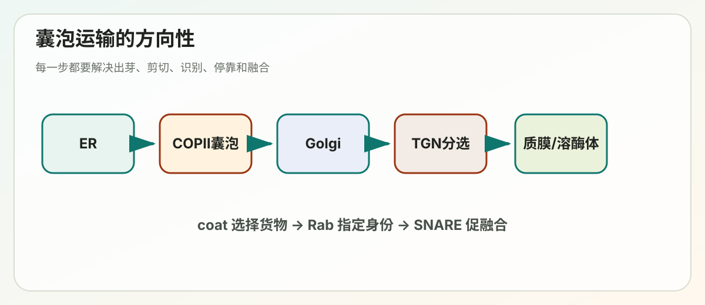
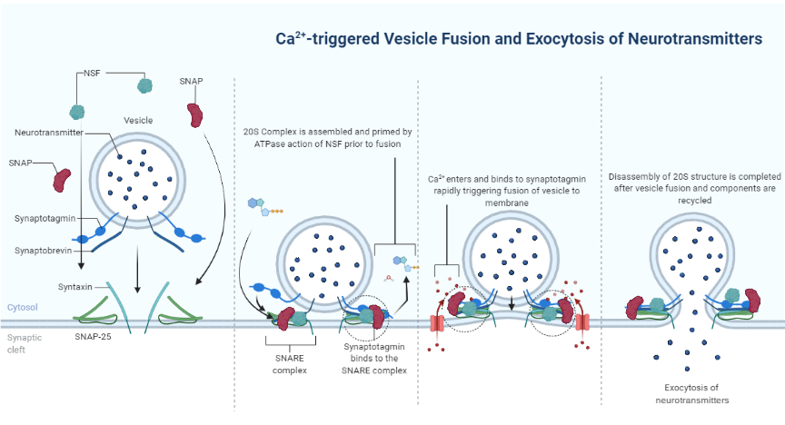

Lecture 12
Lecture 12: 细胞内囊泡运输 (Intracellular Vesicular Traffic)


学习笔记 — 基于邓怿教授 (SUSTech) 课件整理
---
写在前面：为什么要学囊泡运输？
真核细胞内部有许多膜包裹的"房间"（细胞器），每个房间里住着不同的蛋白质和酶，各司其职。问题来了：一个在内质网（ER）上合成的蛋白质，怎么准确地被送到高尔基体、溶酶体、或者细胞表面？ 答案就是——囊泡运输（vesicular traffic）。细胞用小小的膜泡（vesicle）像"快递包裹"一样，把货物从一个细胞器精确运送到另一个细胞器。
---
第一部分：囊泡运输概述 (Overview of Vesicular Traffic)
1.1 历史背景：George Palade 的开创性工作
George Palade（1912–2008），耶鲁大学，1974年诺贝尔生理学或医学奖得主。他被誉为"现代细胞生物学之父"，第一个用电子显微镜系统描绘了细胞内的分泌通路。
他在1975年发表于 Science 的经典论文中，绘制了细胞内运输的路线图：蛋白质从粗面内质网 → 高尔基体 → 分泌囊泡 → 细胞外。
1.2 Jamieson & Palade 的脉冲追踪实验 (Pulse-Chase Experiment)
这是理解分泌途径的经典实验，步骤如下：
实验材料：豚鼠胰腺切片（pancreas，是分泌蛋白质的"专业选手"）
实验步骤：
1. 脉冲（Pulse）阶段：将胰腺薄切片放入含放射性亮氨酸的培养基中短暂培养。放射性亮氨酸会被掺入到正在合成的蛋白质中，相当于给蛋白质"贴了标签"。
2. 追踪（Chase）阶段：把切片转移到含非放射性亮氨酸的培养基中继续培养。此时新合成的蛋白质不再被标记，我们就可以追踪那些已经标记了的蛋白质去了哪里。
实验结果（通过放射自显影观察银颗粒的位置）：
| 时间点 | 放射性标记的位置 | 含义 |
|---|---|---|
| 3 分钟 | 内质网 (ER) | 蛋白质刚刚合成，还在ER中 |
| 10 分钟 | 高尔基体 (Golgi) | 蛋白质已经从ER转运到Golgi |
| 40 分钟 | 分泌囊泡 (secretory vesicles) | 蛋白质已经被包装到分泌囊泡中，准备分泌 |
核心结论：蛋白质沿着 ER → Golgi → 分泌囊泡 的路线依次运输，这个过程是有序的、定向的。
1.3 用荧光显微镜实时观察蛋白质运输
工具：VSVG-GFP（水泡性口炎病毒 G 蛋白与绿色荧光蛋白的融合体）
巧妙之处：这个蛋白有一个温度敏感突变（ts045）——
- 40°C：蛋白质发生错误折叠，被滞留在 ER 中
- 32°C：蛋白质正确折叠，作为一个同步群体从 ER → Golgi → 质膜 依次移动
这让科学家可以像看电影一样，实时追踪一波蛋白质从 ER 出发、经过 Golgi、最终到达质膜的全过程。荧光定量分析显示：ER 的荧光先下降，Golgi 的荧光先升后降，质膜的荧光持续上升——完美符合"接力运输"模型。
1.4 囊泡运输的核心问题
关于囊泡运输，细胞需要解决四个关键问题：
1. 囊泡如何形成？（Vesicle formation / budding） 2. 囊泡如何从原始膜上剪切下来？（Vesicle fission） 3. 囊泡如何与靶膜融合？（Vesicle fusion） 4. 整个过程如何被精确调控？（Regulation）
1.5 2013年诺贝尔生理学或医学奖
James Rothman、Randy Schekman 和 Thomas Südhof 因发现调控囊泡运输的分子机器而共同获奖。他们分别用不同的方法揭示了这个系统的核心组件。
1.6 Schekman 的酵母遗传学方法
Randy Schekman 使用出芽酵母（Saccharomyces cerevisiae）进行遗传筛选。
策略：寻找温度敏感（Ts）突变体——
- 在允许温度 24°C 正常生长和分泌
- 在限制温度 37°C 分泌受阻
筛选方法：
1. 在主平板上培养酵母菌落 2. 复制到两块平板：一块 24°C，一块 37°C 3. 对分泌酶活性进行染色检测 4. 在 37°C 下分泌减少的菌落就是候选突变体
关键发现：鉴定了一系列 sec 突变体（secretion-defective），这些突变体在限制温度下出现不同的表型。通过电子显微镜观察，可以看到 sec1 突变体在限制温度下积累了大量囊泡（vesicles, Ve），而在允许温度下形态正常。
1.7 五类 sec 突变体揭示分泌通路的顺序
根据突变体在限制温度下蛋白质积累的位置，可以分为五类：
| 类别 | 蛋白积累位置 | 受损功能 |
|---|---|---|
| Class A | 细胞质中 | 进入 ER 的转运 |
| Class B | 粗面 ER 中 | 从粗面 ER 出芽形成囊泡 |
| Class C | ER-Golgi 转运囊泡中 | 转运囊泡与 Golgi 的融合 |
| Class D | Golgi 中 | 从 Golgi 到分泌囊泡的转运 |
| Class E | 分泌囊泡中 | 分泌囊泡到细胞表面的转运 |
意义：通过双突变体分析（将两类突变组合），可以确定各步骤的先后顺序。这就像交通堵塞——如果在路上的两个不同点同时设置路障，车辆只会堵在前面那个路障处。
1.8 Rothman 的体外生化方法
James Rothman 使用体外囊泡出芽实验（in vitro vesicle budding assay）：
基本原理：
1. 从细胞中分离供体膜（microsomes 或半完整细胞） 2. 加入待测蛋白质 + GTP 3. 孵育后离心（13,000g）分离囊泡 4. 用电子显微镜观察是否产生囊泡
通过这种方法，可以逐一添加或去除蛋白质，确定哪些是囊泡形成必需的。用TEM（透射电镜）观察，可以看到约 100 nm 大小的囊泡，表面覆盖着蛋白质外壳。
1.9 囊泡有蛋白质外套 (Coat Proteins)
运输囊泡的表面覆盖着特定的外套蛋白（coat proteins）。
外套蛋白的功能：
1. 驱动膜的弯曲和囊泡形成：外套蛋白组装成笼状结构，把平坦的膜"拱"成球形 2. 选择货物：通过与货物蛋白质上的分选信号结合，确保正确的蛋白质被装入囊泡 3. 决定运输方向：不同类型的外套蛋白介导不同方向的运输
1.10 三种主要的被膜囊泡
| 囊泡类型 | 外套蛋白 | 运输方向 |
|---|---|---|
| COPII | Sec23/24, Sec13/31, Sar1 | ER → Golgi（顺行运输） |
| COPI | coatomer (α-ζ七个亚基) | Golgi → ER（逆行运输），Golgi 内转运 |
| Clathrin | clathrin + 接头蛋白 (AP) | TGN → 内体/溶酶体，质膜 → 内体（内吞） |
记忆技巧：COPII = "二号往前走"（ER→Golgi），COPI = "一号往回走"（Golgi→ER）。
1.11 GTP酶控制外套蛋白的组装与解聚
核心发现：在体外出芽实验中加入不可水解的 GTP 类似物（如 GTPγS），会导致被膜囊泡大量积累。
为什么？ 因为外套蛋白的组装和解聚受到小GTP酶（small GTPase）的调控：
- GTP 结合态（活性态）→ 招募外套蛋白，促进囊泡出芽
- GTP 水解为 GDP（非活性态）→ 外套蛋白脱落（uncoating）
如果 GTP 不能被水解，外套蛋白就无法脱落，囊泡就一直穿着"外套"——无法与靶膜融合。
两种关键的外套招募 GTP 酶：
| GTP酶 | 控制的囊泡类型 |
|---|---|
| Sar1 (Secretion-Associated Ras-superfamily-related protein 1) | COPII 囊泡 |
| ARF (ADP-Ribosylation Factor) | COPI 和 clathrin 囊泡 |
1.12 Sar1 如何招募 COPII 外套蛋白
COPII 囊泡形成的详细步骤：
1. Sec12（是 Sar1 的 GEF，即鸟苷酸交换因子）位于 ER 膜上 2. Sec12 将 Sar1 上的 GDP 换成 GTP → Sar1 被激活 3. 活化的 Sar1-GTP 暴露出疏水性 N 端，像"锚"一样插入 ER 膜 4. Sar1-GTP 招募 Sec23/Sec24 内层外套复合物
5. 最后招募 Sec13/Sec31 外层外套，形成完整的 COPII 笼状结构
- Sec24：负责识别和结合货物蛋白（cargo sorting）
- Sec23：是 Sar1 的 GAP（GTP酶活化蛋白），能促进 GTP 水解
重要概念：GEF 和 GAP
| 蛋白 | 全名 | 功能 |
|---|---|---|
| GEF | Guanine nucleotide Exchange Factor | 催化 GDP → GTP，激活 GTPase |
| GAP | GTPase-Activating Protein | 促进 GTP 水解为 GDP，失活 GTPase |
1.13 囊泡的剪切 (Fission)
当外套蛋白将膜弯曲到一定程度后，囊泡颈部的膜需要被"剪断"才能完全脱离供体膜。这个过程涉及膜的重组——两层脂双层（细胞质面小叶和腔面小叶）在颈部融合并断裂，形成独立的囊泡。
1.14 Rothman 发现膜融合所需的蛋白质
Rothman 的巧妙实验——体外囊泡运输重建：
实验设计：
- 供体 Golgi（"Donor"）：含有 VSV-G 蛋白（在 cis-Golgi 中），但缺少糖基转移酶
- 受体 Golgi（"Acceptor"）：含有糖基转移酶（在 medial-Golgi 中），但没有 VSV-G
检测方法：如果 VSV-G 蛋白被转运到受体 Golgi，糖基转移酶就会在 VSV-G 上添加放射性糖基，可以通过测量放射性来定量转运效率。
结果：放射性标记随时间增加，说明 VSV-G 确实通过囊泡从供体转运到了受体。
1.15 NEM 的发现——通往 NSF 和 SNARE 的线索
NEM（N-ethylmaleimide，N-乙基马来酰亚胺） 是一种化学试剂，能修饰蛋白质上的巯基（-SH）。
关键发现：加入 NEM 后，囊泡运输被阻断。但阻断发生在融合步骤，而非出芽步骤——细胞中积累了大量约 70 nm 的未被膜囊泡（uncoated vesicles），它们携带着 VSV-G 蛋白，但无法与靶膜融合。
这说明：存在某种对 NEM 敏感的细胞质蛋白，对膜融合至关重要。
1.16 SNARE 蛋白介导膜融合的特异性
NSF：N-ethylmaleimide-Sensitive Factor（NEM 敏感因子）——正是上面实验中被 NEM 抑制的那个蛋白。NSF 是一种 ATPase。
SNARE：Soluble NSF Attachment protein Receptor（可溶性 NSF 附着蛋白受体）
SNARE 蛋白介导膜融合的机制：
1. v-SNARE（vesicle-SNARE）：位于囊泡膜上 2. t-SNARE（target-SNARE）：位于靶膜上 3. v-SNARE 和 t-SNARE 相互识别并缠绕，形成trans-SNARE 复合物（跨膜 SNARE 束），将两层膜拉近 4. 膜被拉得足够近后发生融合 5. 融合后，NSF 利用 ATP 水解的能量，将 SNARE 复合物拆开（dissociation），回收利用
特异性：不同的细胞器有不同的 SNARE 蛋白组合，只有匹配的 v-SNARE / t-SNARE 才能形成稳定的复合物，从而确保囊泡只与正确的靶膜融合。
1.17 Rab 蛋白引导囊泡到达靶膜
Rab 蛋白 是另一个大家族的小 GTP 酶（人类有超过 60 种），每种 Rab 蛋白定位在不同的细胞器膜上。
Rab 蛋白介导的三步曲：
1. 系留（Tethering）：Rab-GTP（活性态）招募系留因子（tethering factors），在远距离"抓住"运输囊泡 2. 对接（Docking）：囊泡被拉近靶膜 3. 融合（Fusion）：v-SNARE 和 t-SNARE 形成 trans-SNARE 复合物，驱动膜融合
融合后，Rab 蛋白上的 GTP 被水解为 GDP，Rab-GDP 被 GDI（GDP Dissociation Inhibitor，GDP 解离抑制因子）从膜上取下，送回细胞质中循环利用。
1.18 囊泡运输的完整流程总结
一个运输囊泡的"生命周期"：
1. 出芽（Budding）：GTP 酶激活 → 招募外套蛋白 → 选择货物 → 膜弯曲 → 囊泡形成 2. 运动（Movement）：囊泡沿细胞骨架（微管）运动，由马达蛋白驱动 3. 系留（Tethering）：Rab 蛋白和系留因子将囊泡"捕获"到靶膜附近 4. 融合（Fusion）：SNARE 蛋白介导膜融合，货物被释放
参与的分子角色：
| 分子 | 功能 |
|---|---|
| 外套蛋白（coat protein） | 驱动囊泡形成，选择货物 |
| 货物受体（cargo receptor） | 识别并结合要运输的蛋白质 |
| 马达蛋白（motor protein） | 沿细胞骨架运动 |
| 系留因子（vesicle tether） | 远距离捕获囊泡 |
| v-SNARE / t-SNARE | 介导膜融合 |
| Rab GTPase | 调控系留和融合 |
---
第二部分：从 ER 到 Golgi 的运输
2.1 蛋白质通过 COPII 囊泡离开 ER
COPII 外套的组成（前面已经介绍）：
- Sar1-GTP：插入膜中，启动过程
- Sec23/Sec24（内层外套）：Sec24 识别货物上的ER 出口信号（exit signal）
- Sec13/Sec31（外层外套）：形成笼状结构
货物的选择：
- 膜蛋白（membrane-bound cargo）：在其细胞质面结构域上携带分选信号，直接被 Sec24 识别
- 可溶性分泌蛋白（soluble cargo）：不直接与外套蛋白接触，而是通过膜蛋白受体间接被选入囊泡（受体的细胞质面与 Sec24 结合，腔面与可溶性货物结合）
- 未折叠/错误折叠的蛋白：被 ER 中的分子伴侣（如 BiP） 结合并滞留，不能离开 ER
2.2 ER 出口需要正确的蛋白折叠
核心原则：只有正确折叠和组装的蛋白质才能离开 ER。
以 IgG（免疫球蛋白 G）的组装为例：
1. 抗体重链被合成后，立即被分子伴侣 BiP 结合并滞留在 ER 中 2. 轻链合成后与重链组装 3. 组装过程中 BiP 逐渐释放 4. 只有当 2 条重链 + 2 条轻链完全组装成 Y 形四聚体后，BiP 完全释放，抗体才能被装入 COPII 囊泡分泌出去
如果亚基缺失或折叠错误，BiP 不释放，蛋白质就永远留在 ER 中。这是 ER 的质量控制（quality control） 机制。
2.3 COPII 囊泡不都是圆球形
有趣的发现：COPII 外套是一个灵活的系统，可以形成不同形状的囊泡：
- 小的球形囊泡（~60-80 nm）：运输常规大小的蛋白质
- 大的管状囊泡：运输超大货物，如原胶原（procollagen）——长约 300 nm 的三螺旋纤维，根本装不进小囊泡！
要形成管状囊泡，需要额外的包装蛋白（packaging proteins） 与 Sec13/Sec31 外套配合。
2.4 囊泡管状簇 (VTCs) 和 ER 出口位点
ER 出口位点（ERES, ER Exit Site）：ER 膜上的特定区域，没有核糖体（称为过渡性 ER，transitional ER），是 COPII 囊泡出芽的地方。
VTC（Vesicular-Tubular Cluster）：
- COPII 囊泡从 ERES 出芽后，不是直接飞到 Golgi，而是先在附近聚集形成 VTC
- VTC 也叫 ERGIC（ER-Golgi 中间区室）
- VTC 沿着微管向 Golgi 方向运动
- 在 VTC 阶段，COPI 囊泡已经开始形成，执行逆行运输（将 ER 驻留蛋白送回 ER）
2.5 高尔基体的形态和结构
高尔基体不是简单的"一摞煎饼"！
高尔基体由一系列功能不同的扁平囊状结构（cisternae）堆叠而成，不同层具有不同的酶：
| 区域 | 主要功能 |
|---|---|
| cis-Golgi 网络 (CGN) | 分选站；溶酶体蛋白的寡糖磷酸化 |
| cis 面 | 去除甘露糖残基 |
| medial 面 | 去除甘露糖；添加 GlcNAc |
| trans 面 | 添加半乳糖 (Gal)；添加唾液酸 (NANA) |
| trans-Golgi 网络 (TGN) | 酪氨酸和碳水化合物的硫酸化；最终分选站——蛋白质被分拣到溶酶体、质膜或分泌囊泡 |
方向性：cis 面朝向细胞核/ER，trans 面朝向质膜。
高尔基体的cisternae之间有管状连接，整体结构比教科书上画的复杂得多。
2.6 高尔基体内部运输的两种模型
关于蛋白质如何穿过高尔基体的多层结构，有两种模型之争：
模型 A：囊池成熟模型（Cisternal Maturation Model）
- 新的 cisterna 在 cis 面不断形成，旧的在 trans 面不断消解
- 整个 cisterna 带着货物一起"向前走"
- 酶通过 COPI 囊泡逆行运输，从成熟的 cisterna 被送回到较年轻的 cisterna
- 这个模型能解释大型货物（如原胶原纤维）如何穿过 Golgi——它们太大了，装不进小囊泡
模型 B：囊泡运输模型（Vesicle Transport Model）
- Cisternae 是固定不动的
- 货物通过囊泡从一层 cisterna 转运到下一层
目前的共识：两种机制可能同时存在，不同类型的货物可能使用不同的机制。
2.7 COPI 介导的逆行运输
为什么需要逆行运输？
ER 中有很多驻留蛋白（如分子伴侣 BiP），它们本不应该离开 ER，但有时会意外地被"裹挟"进 COPII 囊泡中。COPI 囊泡的一个重要功能就是把这些"泄漏"出去的 ER 蛋白送回来。
2.8 ER 检索信号 (ER Retrieval Signals)
ER 驻留蛋白之所以能被"找回来"，是因为它们携带特定的检索信号：
| 蛋白类型 | 检索信号 | 识别机制 |
|---|---|---|
| ER 驻留膜蛋白 | C 端 KKXX 基序 | 直接被 COPI 外套识别 |
| ER 驻留可溶性蛋白 | C 端 H/KDEL 序列 | 被 KDEL 受体识别 |
KDEL 受体的工作机制（非常巧妙）：
- KDEL 受体是一个跨膜蛋白，在 ER 和 Golgi 之间穿梭
- 在 Golgi 中（pH 较低，H⁺浓度较高）：KDEL 受体与带有 KDEL 信号的蛋白高亲和力结合
- 结合后，KDEL 受体-货物复合物被装入 COPI 囊泡，送回 ER
- 在 ER 中（pH 较高）：KDEL 受体释放货物
- 空的 KDEL 受体再通过 COPII 囊泡回到 Golgi，准备下一轮运输
利用 pH 差异来调控结合/释放——这是细胞中反复出现的精妙设计！
2.9 ER → Golgi 运输总结
要点回顾：
- COPII 囊泡从 ER 出口位点（ERES）出芽，介导 ER → Golgi 的顺行运输
- 膜蛋白通过细胞质面的出口信号被选入 COPII 囊泡
- 可溶性分泌蛋白通过"批量流动（bulk-flow）"或受体介导进入 COPII 囊泡
- 只有正确折叠的蛋白才能离开 ER（质量控制）
- COPI 囊泡介导逆行运输，将 ER 驻留蛋白送回
- ER 驻留蛋白靠 KKXX（膜蛋白）或 H/KDEL（可溶性蛋白）信号被检索回来
---
第三部分：蛋白质糖基化 (Protein Glycosylation)
3.1 两种糖基化类型
糖基化是在蛋白质上添加糖链的翻译后修饰，对蛋白质的折叠、稳定性、识别和功能都很重要。
| 类型 | 连接位点 | 连接方式 | 起始位置 |
|---|---|---|---|
| N-糖基化 | 天冬酰胺 (Asn) 的酰胺氮 | N-乙酰葡糖胺 (GlcNAc) 连接到 Asn | ER（开始），Golgi（修饰） |
| O-糖基化 | 丝氨酸 (Ser) 或苏氨酸 (Thr) 的羟基氧 | N-乙酰半乳糖胺 (GalNAc) 连接到 Ser/Thr | Golgi |
3.2 N-糖基化的详细过程
第一步：在 ER 中的 en bloc 转移
N-糖基化有一个识别序列：Asn-X-Ser/Thr（X 可以是除 Pro 以外的任何氨基酸）。
过程：
1. 一个预制的 14 糖寡聚糖（3 葡萄糖 + 9 甘露糖 + 2 GlcNAc）被连接在 ER 膜中的多萜醇磷酸（dolichol-P）上 2. 当新生肽链从核糖体中伸出、进入 ER 腔时，寡糖基转移酶（oligosaccharyl transferase, OST） 将整个 14 糖一次性（en bloc） 转移到 Asn 上 3. 然后在 ER 腔中，3 个葡萄糖和 1 个甘露糖被酶移除（糖修剪）
第二步：两种最终产物
| 类型 | 特征 | 产生位置 |
|---|---|---|
| 高甘露糖型（High-mannose） | 主要含甘露糖残基 | 只在 ER 中修剪 |
| 复杂型（Complex） | 含多种糖（GlcNAc, Gal, NANA/唾液酸） | 在 Golgi 中进一步修饰 |
3.3 Golgi 中的 N-糖基化修饰
在蛋白质通过 Golgi 的不同层时，糖链被不同的酶依次修饰：
| Golgi 层 | 酶 | 反应 |
|---|---|---|
| Cis | 甘露糖苷酶 I (Mannosidase I) | 移除甘露糖残基 |
| Medial | GlcNAc 转移酶 | 添加 GlcNAc |
| Medial | 甘露糖苷酶 II (Mannosidase II) | 进一步移除甘露糖 |
| Trans | 多种转移酶 | 添加半乳糖 (Gal)、唾液酸 (NANA/Sialic acid) |
这个过程就像流水线——蛋白质通过不同的"车间"，在每个车间接受不同的加工。
3.4 O-糖基化
O-糖基化完全发生在 Golgi 中（不同于 N-糖基化从 ER 开始）。
两种最重要的 O-糖基化：
1. 黏蛋白型 O-聚糖（Mucin-type O-glycans）：GalNAc 连接到 Ser/Thr → 常见于黏蛋白，保护上皮表面 2. 糖胺聚糖（GAG）链：木糖 (Xylose) 连接到 Ser → 形成蛋白聚糖（proteoglycans）的长糖链
---
第四部分：从 TGN 到溶酶体的运输
4.1 溶酶体的基本特征
溶酶体（Lysosome） 是细胞的"消化工厂"：
- 大小：0.2–0.5 μm
- 内部 pH：~5.0（酸性环境，由 V-ATPase（H⁺泵） 维持）
- 细胞质 pH：~7.2
- 含有约 40 种酸性水解酶：包括核酸酶、蛋白酶、糖苷酶、脂酶、磷酸酶、硫酸酶、磷脂酶等
- 膜特征：限制膜（limiting membrane）上有高度糖基化的膜蛋白（如 LAMP1, LAMP2, LAMP3）保护膜免受自身酶的消化；含有腔内囊泡（intraluminal vesicles, ILVs）和特殊脂质溶血双磷脂酸（lyso-bisphosphatidic acid）
4.2 M6P 是溶酶体酶的分选信号
问题：溶酶体的酸性水解酶是在 ER 中合成的，它们怎么知道要去溶酶体而不是被分泌出去？
答案：甘露糖-6-磷酸（Mannose-6-Phosphate, M6P） 信号！
M6P 信号的产生过程（在 Golgi 中）：
1. 溶酶体水解酶前体的三维结构上有一个信号补丁（signal patch）——不是线性序列，而是蛋白质折叠后在表面形成的三维构象 2. GlcNAc 磷酸转移酶识别这个信号补丁，将 GlcNAc-磷酸添加到酶上 N-聚糖的甘露糖残基上 3. 然后另一个酶将 GlcNAc 移除，暴露出磷酸基团，形成 M6P 标签
4.3 M6P 如何将蛋白质靶向溶酶体
1. 在 TGN 中，带有 M6P 标签的溶酶体水解酶前体与 M6P 受体（MPR, Mannose-6-Phosphate Receptor） 结合 2. MPR 的细胞质面被 clathrin 外套 识别（通过接头蛋白），形成 clathrin 包被囊泡 3. 囊泡被运输到早期内体 (early endosome) 4. 在内体的酸性 pH 中，M6P-水解酶与 MPR 解离 5. 水解酶前体继续前往晚期内体/溶酶体，在那里被激活（酸性 pH 下前肽被切除） 6. 空的 MPR 通过 retromer（逆转录复合体） 介导的囊泡被回收到 TGN，重复使用 7. 水解酶上的磷酸基团也被移除
retromer 是一个非常重要的蛋白复合物，负责将 MPR 从内体回收到 TGN。retromer 功能障碍与神经退行性疾病有关。
---
第五部分：分泌和胞吐 (Secretion and Exocytosis)
5.1 两种分泌途径
| 类型 | 存在细胞 | 特点 | 货物举例 |
|---|---|---|---|
| 组成型分泌（Constitutive） | 所有真核细胞 | 持续进行，不需要外部信号 | 质膜蛋白、脂质、ECM 蛋白 |
| 调控型分泌（Regulated） | 专职分泌细胞 | 需要外部信号触发 | 激素、组胺、神经递质、消化酶 |
5.2 分泌囊泡的形成过程
以胰腺 β 细胞为例：
1. 在 TGN 中，分泌蛋白（如胰岛素原）开始聚集浓缩 2. 形成未成熟分泌囊泡（immature secretory vesicle） 3. Clathrin 包被囊泡（CCVs） 从未成熟囊泡上出芽，将多余的膜和非分泌蛋白送回 TGN（逆行运输） 4. 通过不断移除膜，囊泡体积缩小，货物进一步浓缩 5. 形成成熟分泌囊泡（mature secretory vesicle）——货物高度浓缩的"弹药库"
5.3 Ca²⁺ 调控的神经递质释放
Thomas Südhof 的贡献——揭示 Ca²⁺ 如何触发突触囊泡释放。
突触囊泡的融合机制（5 步）：
1. 对接（Docking）：突触囊泡靠近突触前膜，v-SNARE（synaptobrevin/突触小泡蛋白）与 t-SNARE（syntaxin 和 SNAP-25）开始组装 2. 启动 I（Priming I）：SNARE 束部分组装 3. 启动 II（Priming II）：Complexin（复合蛋白） 结合到 SNARE 束上，"锁住" 融合机器——囊泡处于"待发射"状态 4. 融合孔开放（Fusion pore opening）：Ca²⁺ 流入 → 结合到 synaptotagmin（突触结合蛋白） 上 → synaptotagmin 与磷脂和 SNARE 蛋白相互作用 → 解除 complexin 的锁定 → 膜融合发生 5. 融合完成（Fusion complete）：神经递质释放到突触间隙
关键蛋白：
| 蛋白 | 位置 | 功能 |
|---|---|---|
| Synaptobrevin | 囊泡膜（v-SNARE） | 与 t-SNARE 配对 |
| Syntaxin | 突触前膜（t-SNARE） | 与 v-SNARE 配对 |
| SNAP-25 | 突触前膜（t-SNARE） | 与上述两者组成四螺旋束 |
| Complexin | 细胞质 | 锁定 SNARE 束，防止自发融合 |
| Synaptotagmin | 囊泡膜 | Ca²⁺ 感受器，触发融合 |
5.4 胞吐后的膜平衡
胞吐（exocytosis）时，囊泡膜与质膜融合，增加了质膜面积。
三种需要快速增加质膜的场景：
1. 细胞分裂（卵裂沟形成） 2. 吞噬作用（巨噬细胞吞噬病菌时需要大量膜） 3. 伤口修复
膜的流量平衡：
| 前向流（Forward flow） | 逆向流（Retrograde flow） | 结果 |
|---|---|---|
| = 逆向流 | = 前向流 | 细胞大小不变 |
| > 逆向流 | < 前向流 | 细胞快速生长 |
| < 逆向流 | > 前向流 | 细胞缩小 |
---
第六部分：内吞和内体-溶酶体系统
6.1 两种主要的内吞方式
| 类型 | 特点 | 吞噬物大小 |
|---|---|---|
| 吞噬作用（Phagocytosis） | "细胞吃"，主要是免疫细胞（巨噬细胞） | 大颗粒（细菌、细胞碎片等） |
| 胞饮作用（Pinocytosis） | "细胞喝"，所有细胞都有 | 液体和溶质 |
Clathrin 介导的内吞（CME） 是最经典的胞饮机制。
6.2 Clathrin 的结构
Clathrin（网格蛋白）由 Barbara Pearse 于 1975 年命名（来自拉丁语 clathrates，意为"格子状的"）。
结构层次：
1. 三脚架（Triskelion）：由 3 条重链 + 3 条轻链组成的三条"腿"结构，是 clathrin 的基本单元 2. 笼状结构（Basket）：多个三脚架进一步组装成由六边形和五边形组成的多面体笼子（类似足球的结构，通过五边形产生弯曲）
6.3 接头蛋白 (Adaptor Proteins, APs)
Clathrin 本身不直接结合货物，需要接头蛋白（AP）来连接。
AP 复合物是核心连接者，同时桥接三个组分：
1. 膜（通过结合特定的磷酸肌醇脂质） 2. 货物蛋白（识别货物的内吞信号） 3. Clathrin（招募 clathrin 三脚架）
AP 复合物家族（四亚基异四聚体）：
| AP 复合物 | 定位 | 功能 |
|---|---|---|
| AP1 | TGN, 内体 | Clathrin 介导的运输 |
| AP2 | 质膜 | Clathrin 介导的内吞（最经典） |
| AP3 | TGN, 内体 | 溶酶体相关细胞器 |
| AP4 | TGN, 内体 | Clathrin 非依赖性运输 |
| GGA | TGN | 单体接头蛋白 |
6.4 AP2 的激活机制
AP2 有两种构象：
- 锁定态（Locked）：AP2 呈紧凑构象，隐藏了货物结合位点和磷脂结合位点
- 开放态（Open）：AP2 打开构象，暴露结合位点
激活需要双重信号：
1. PI(4,5)P₂（质膜上特有的磷酸肌醇）与 AP2 的 α 亚基结合 2. 货物蛋白的内吞信号与 AP2 的 μ2 亚基结合
两者协同作用使 AP2 从锁定态转变为开放态。这确保了 clathrin 包被囊泡主要在有货物的地方形成（虽然没有货物也可以形成空囊泡，但效率低很多）。
6.5 Clathrin 包被囊泡的组装与解聚
完整过程：
1. 外套组装和货物选择：AP2 结合 PI(4,5)P₂ 和货物 → 招募 clathrin 三脚架 2. 芽体形成：clathrin 笼子逐渐组装，膜弯曲 3. 囊泡形成：需要膜弯曲蛋白和剪切蛋白（dynamin） 4. 去被膜（Uncoating）：囊泡从膜上剪切后，PI(5)P 磷酸酶水解 PI(4,5)P₂ → 失去了 AP2 与膜的结合力 → 外套蛋白脱落 → 形成裸露的运输囊泡
6.6 磷酸肌醇 (PIPs) 是膜身份的标签
核心概念：不同的细胞器膜含有不同种类的磷酸肌醇（PIPs），这些 PIPs 就像"邮编"一样标记了每个细胞器。
| 磷酸肌醇 | 主要分布 |
|---|---|
| PI(4,5)P₂ | 质膜 |
| PI(3)P | 早期内体 |
| PI(4)P | Golgi |
| PI(3,5)P₂ | 晚期内体 |
| PI(3,4,5)P₃ | 质膜（受信号调控） |
PIPs 通过招募含有特定PI 结合结构域（如 PH domain, FYVE domain, PX domain）的蛋白质，来实现膜身份识别和信号传导。
6.7 Dynamin——囊泡剪切的"剪刀"
发现：来自果蝇 Shibire 突变体（"颤抖"突变体）的研究。这种突变体在高温下瘫痪，因为突触囊泡无法从质膜上剪切下来。电镜下可以看到，囊泡通过长长的"脖子"连在质膜上，无法释放。
Dynamin 的作用机制：
1. Dynamin 含有 PI(4,5)P₂ 结合域，被招募到囊泡颈部 2. Dynamin 还与 Amphiphysin（含 BAR 结构域的蛋白）结合——BAR 结构域像"香蕉形的夹子"一样感知和诱导膜弯曲 3. 多个 Dynamin 分子在囊泡颈部组装成螺旋环 4. Dynamin 的 GTPase 结构域水解 GTP → 构象改变 → 收缩 → 将囊泡颈部拧断
6.8 受体介导的 LDL 内吞——经典案例
LDL（低密度脂蛋白） 是血液中运输胆固醇的"快递包裹"（~22 nm 的颗粒，外面是磷脂和载脂蛋白，里面装满胆固醇和胆固醇酯）。
LDL 内吞的完整过程：
1. LDL 颗粒结合质膜上的 LDL 受体 2. LDL 受体-LDL 复合物被集中到 clathrin 包被的坑（coated pit） 中 3. 坑内陷形成 clathrin 包被囊泡 → dynamin 剪切 → 囊泡释放 4. 囊泡去被膜 → 与早期内体（early endosome）融合 5. 在内体的酸性环境（pH ~6）中，LDL 与 LDL 受体分离 6. LDL 受体被回收到质膜，重复使用 7. LDL 颗粒继续前往晚期内体和溶酶体 8. 在溶酶体中，LDL 被水解酶降解，释放出游离胆固醇供细胞使用
临床意义：LDL 受体基因突变导致家族性高胆固醇血症——LDL 无法被有效清除，血液中 LDL 水平升高，动脉粥样硬化和心血管疾病风险大增。
6.9 其他内吞方式
除了 clathrin 介导的内吞，还有：
1. Caveolae 介导的胞饮：Caveolae（小凹）是质膜上富含胆固醇和鞘磷脂的小型内陷，由 caveolin 蛋白形成 2. FEME（Fast Endophilin-Mediated Endocytosis，快速内吞蛋白介导的内吞）：由 endophilin（含 BAR 结构域）和 dynamin 驱动，不依赖 clathrin 3. 巨胞饮（Macropinocytosis）：细胞膜形成大的褶皱（ruffle），包裹大量细胞外液体，形成大的巨胞饮体（macropinosome）。由肌动蛋白（actin）重排驱动
6.10 内体-溶酶体系统
这是一个由多个动态互相转化的膜室组成的系统：
各组成部分：
| 膜室 | 标志蛋白 | pH | 形态特征 | 功能 |
|---|---|---|---|---|
| 早期内体 (EE) | Rab5, PI(3)P | ~6.5 | 含管状和空泡状结构域 | 分选站（sorting endosome） |
| 回收内体 (RE) | Rab11 | ~6.8 | 管状结构 | 将膜蛋白回收到质膜 |
| 多泡体/晚期内体 (MVB/LE) | Rab7 | ~5.5 | 含大量腔内囊泡 (ILVs) | 蛋白质降解的准备 |
| 内体溶酶体 (endolysosome) | — | — | 部分电子致密 | LE 与溶酶体融合的中间体 |
| 溶酶体 (LY) | LAMP 蛋白 | ~4.5-5.0 | 电子致密腔 | 最终降解站 |
6.11 早期内体 (EE) 是分选站
早期内体接收来自质膜的内吞货物后，可以有三种去向：
1. 回收（Recycling）：受体被送回质膜重新使用（如 LDL 受体、转铁蛋白受体）→ 通过回收内体 2. 逆行运输：某些蛋白质被送回 TGN（如 M6P 受体）→ 通过 retromer 3. 降解（Degradation）：信号分子/受体被送入 MVB/溶酶体降解 → 下调信号
6.12 晚期内体 (LE) / 多泡体 (MVB)
MVB 的形成：早期内体膜向内出芽（invagination），形成腔内囊泡（ILVs）。这样，原本在限制膜（外膜）上的膜蛋白就被包裹进了 ILV 内部。
为什么要形成 ILV？ 为了真正降解膜蛋白！如果膜蛋白还在限制膜上，溶酶体的酶无法完全降解它。把它包进 ILV 后，整个 ILV（连同上面的蛋白）都在溶酶体腔内，可以被完全水解。
6.13 信号受体的下调——泛素化和 ESCRT
当一个信号受体（如 EGFR）需要被下调时：
1. 受体被泛素化（ubiquitination）标记 2. 泛素化的受体被内吞到早期内体 3. ESCRT 复合物识别泛素化的受体，将其分选到 ILV 中
ESCRT（Endosomal Sorting Complex Required for Transport）：
| 复合物 | 功能 |
|---|---|
| ESCRT-0 | 识别泛素化的货物 + 结合 PI(3)P（内体的标志脂质） |
| ESCRT-I | 与 ESCRT-0 结合，招募 ESCRT-II |
| ESCRT-II | 启动膜弯曲 |
| ESCRT-III | 驱动膜剪切，完成 ILV 形成 |
注意：ILV 的形成是向腔内出芽，这与普通的囊泡出芽（向细胞质出芽）方向相反——这是一种"反向拓扑学"的膜出芽，不需要外套蛋白。
6.14 内体成熟：Rab 蛋白的"身份转换"
关键问题：早期内体（Rab5+）如何变成晚期内体（Rab7+）？
Rab 转换（Rab conversion）机制：
1. 早期内体膜上有 Rab5-GTP → 招募 Rab5 的效应蛋白（包括 PI3-kinase 产生 PI(3)P、系留因子等） 2. Rab5 的效应蛋白之一是 Rab7 的 GEF（RabB-GEF）→ 激活 Rab7 3. 同时，Rab7 的效应蛋白包含 Rab5 的 GAP（RabA-GAP）→ 失活 Rab5 4. 结果：Rab5 被换成 Rab7 → 膜的身份改变 → 早期内体变成晚期内体
核心概念：这是一个正反馈+负反馈的切换系统。RabA（Rab5）招募了 RabB（Rab7）的激活因子，而 RabB 又招募了 RabA 的抑制因子。这确保了切换是快速且彻底的——不会出现"半早期半晚期"的混合状态。
6.15 Rab5 膜结构域的形成
Rab5 域的建立是一个正反馈环路：
1. Rab5-GEF 将 Rab5 激活（GDP → GTP）→ Rab5-GTP 插入内体膜 2. Rab5-GTP 招募 PI3-激酶 → 在膜上生成 PI(3)P 3. PI(3)P 招募更多含 PI(3)P 结合域的蛋白（包括更多的 Rab5-GEF 和系留因子） 4. 更多 Rab5-GEF → 更多 Rab5 被激活 → 正反馈放大
域的大小由 GTP 水解速率控制——GAP 的活性设定了域的边界。
6.16 回收内体 (RE) 和葡萄糖转运体的调控运输
回收内体（RE）（Rab11 阳性）的功能：将内吞的质膜蛋白和脂质回收到细胞表面重新使用。
经典案例：胰岛素调控的葡萄糖摄取
| 状态 | GLUT4（葡萄糖转运体4）的位置 | 葡萄糖摄取 |
|---|---|---|
| 无胰岛素刺激 | 储存在专门的回收内体中 | 低 |
| 胰岛素刺激 | 信号触发 → RE 与质膜融合 → GLUT4 大量出现在细胞表面 | 高 |
这就是为什么胰岛素抵抗（GLUT4 无法被有效转运到质膜）会导致血糖升高的分子机制。
6.17 极性细胞中的定向分泌
极性细胞（如上皮细胞和神经细胞）面临一个额外挑战：蛋白质不仅要到达正确的细胞器，还要到达细胞的正确一面。
上皮细胞：
1. 直接分选：在 TGN 中就分别装入去往顶端或基底外侧的不同囊泡 2. 间接分选：先全部送到基底外侧面，再通过内吞-回收，将部分蛋白质转运到顶端面
- 有顶端面（apical domain）和基底外侧面（basolateral domain），由紧密连接（tight junction）分隔
- 两种分选方式：
神经细胞：
- 从树突和胞体接收信号
- 通过轴突和突触末端传出信号
- 不同的蛋白质需要被靶向到不同的区域
6.18 转胞吞 (Transcytosis)
转胞吞是一种特殊的运输方式：囊泡从细胞的一面内吞，穿过细胞，从另一面胞吐。
经典案例：新生儿肠道中 IgG 抗体的转运
1. 母乳中的 IgG 抗体在肠道的顶端面（apical, 面向肠腔）被 Fc 受体识别并内吞 2. IgG-Fc 受体复合物经过早期内体 → 回收内体 3. 从基底外侧面（basolateral）胞吐，释放到体液中 4. 这样，母亲的抗体就被传递给了婴儿，提供被动免疫保护
---
核心概念对照表
| 中文术语 | 英文术语 | 功能简述 |
|---|---|---|
| 囊泡 | Vesicle | 膜包裹的小泡，运输货物 |
| 外套蛋白 | Coat protein | 驱动囊泡形成，选择货物 |
| 顺行运输 | Anterograde transport | ER → Golgi → 质膜方向 |
| 逆行运输 | Retrograde transport | Golgi → ER 方向 |
| 系留 | Tethering | 远距离捕获囊泡 |
| 对接 | Docking | 囊泡与靶膜近距离接触 |
| 融合 | Fusion | 囊泡膜与靶膜合二为一 |
| 剪切 | Fission | 囊泡从供体膜上切下 |
| 去被膜 | Uncoating | 外套蛋白从囊泡上脱落 |
| 分选信号 | Sorting signal | 决定蛋白去向的短序列/结构 |
| 质量控制 | Quality control | ER中确保只有正确折叠的蛋白可以离开 |
| 多泡体 | Multivesicular body (MVB) | 含有腔内囊泡的晚期内体 |
| 腔内囊泡 | Intraluminal vesicle (ILV) | MVB 内部的小囊泡 |
| 转胞吞 | Transcytosis | 从细胞一面到另一面的运输 |
---
关键分子速查表
| 分子 | 类型 | 功能 |
|---|---|---|
| Sar1 | 小 GTPase | 控制 COPII 外套组装 |
| ARF | 小 GTPase | 控制 COPI 和 clathrin 外套组装 |
| Rab (1-11+) | 小 GTPase 家族 | 囊泡靶向、系留、膜室身份 |
| Sec12 | GEF | 激活 Sar1 |
| Sec23/24 | COPII 内层外套 | 货物识别 + Sar1 GAP |
| Sec13/31 | COPII 外层外套 | 形成笼状结构 |
| NSF | ATPase | 拆解 SNARE 复合物 |
| v-SNARE | 膜蛋白 | 囊泡上的融合机器 |
| t-SNARE | 膜蛋白 | 靶膜上的融合机器 |
| Clathrin | 外套蛋白 | 形成笼状结构（三脚架） |
| AP1-4, GGA | 接头蛋白 | 桥接 clathrin、膜和货物 |
| Dynamin | GTPase | 囊泡颈部剪切 |
| KDEL 受体 | 膜蛋白受体 | 识别并回收 ER 驻留蛋白 |
| MPR | 膜蛋白受体 | 识别 M6P 标签，运输溶酶体酶 |
| Retromer | 蛋白复合物 | 回收 MPR 到 TGN |
| ESCRT-0/I/II/III | 蛋白复合物 | 识别泛素化货物，形成 ILV |
| Synaptotagmin | Ca²⁺ 感受器 | 触发突触囊泡融合 |
| Complexin | 调节蛋白 | "锁定" SNARE 束 |